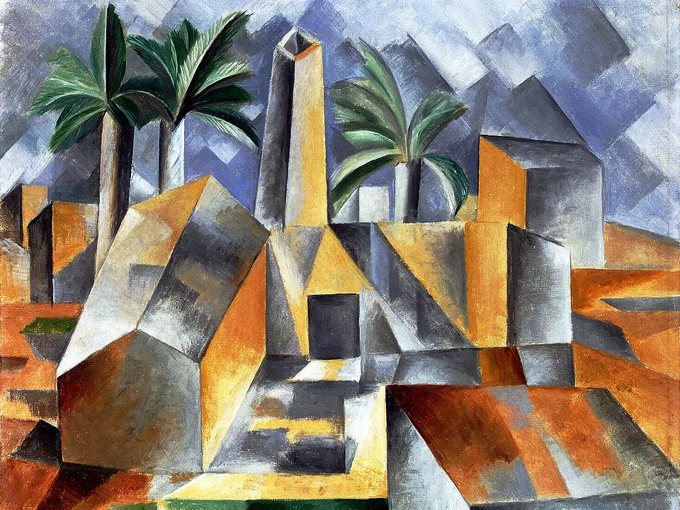
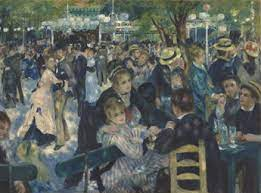
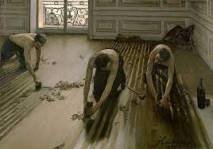
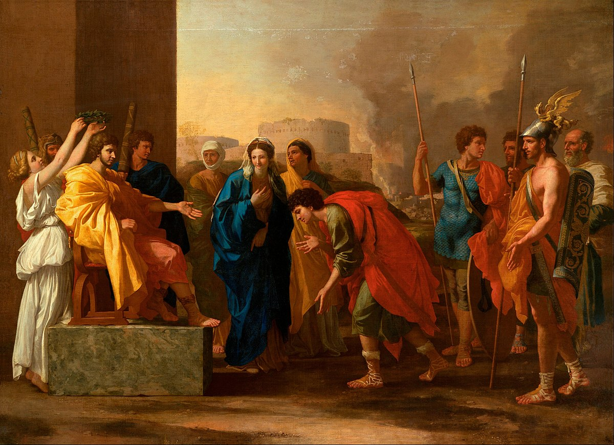
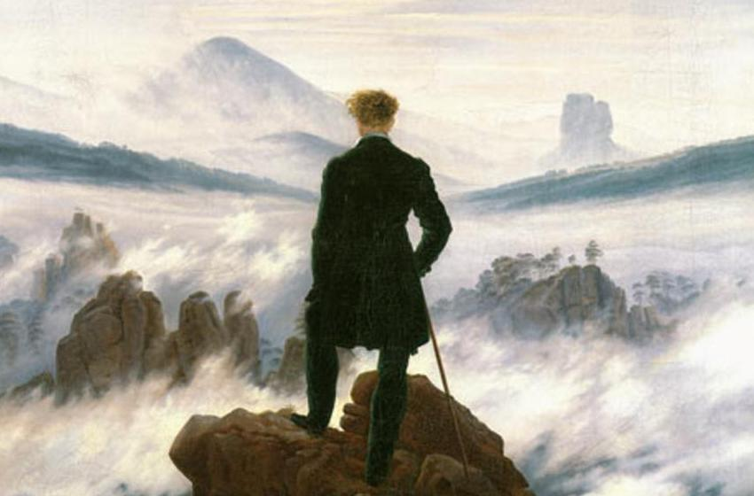
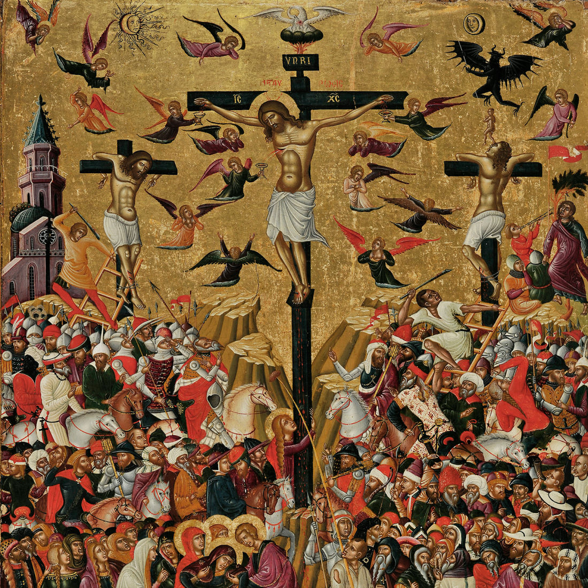
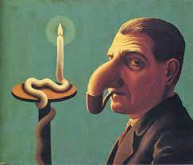

Aequalitas
Accueil
Time Line
Quiz
Contact
Trouverez-vous à quels mouvements artistiques appartiennent ces tableaux ?
Braque et Picasso faisaient partie de ce mouvement artistique, suivis ensuite par Delaunay ou Fernand Léger. Quel est son nom ?
Le fauvisme
Le cubisme
Le rococo

Van Gogh et Renoir faisaient partie de ce mouvement artistique, un des plus fameux et des plus appréciés actuellement du public. Quel est son nom ?
L'expressionnisme
L'impressionisme
Le surréalisme

Quel est ce peintre français novateur et provocateur, tête de file du mouvement réaliste ?
Jean louis David
Charles le Brun
Gustave Courbet

Quel est le nom de ce mouvement artistique qui se définit par un ensemble de valeurs et de critères qui dessinent un idéal s'incarnant dans l'« honnête homme » et qui développent une esthétique fondée sur une recherche de la perfection, son maître mot étant "la raison" ?
Le maniérisme
Le classicisme
Le gothique

Mouvement du XIXe siècle qui refuse de chercher le beau dans l' antiquité. Les sujets empreints de mélancolie fascinent ces artistes (paysages immenses en proie à la tempête, ruines perdues, ...).
Le classicisme
Le romantisme
La renaissance

Ils ne cherchent pas à représenter le monde visible mais le monde spirituel. Pour cela, ils utilisent des couleurs et des représentations symboliques. Les sujets sont exclusivement religieux. Qui suis-je?
Le baroque
L'art médiéval
Le pop art

A quel mouvement artistique appartient ce tableau ?
Futuriste
Fauviste
Surréaliste
